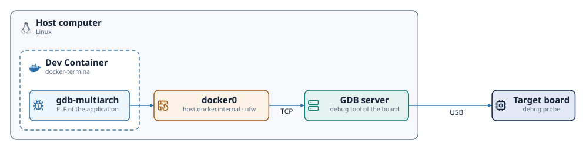

Debugging¶
An application built for the posix-gcc platform is an ordinary native
program, so the usual debugging tools apply to it. This chapter describes how
to debug such an application with gdb,
both from the command line and from Visual Studio Code, in the Docker-based setup that the
installation chapter recommends. The Docker image ships gdb for host-side
debugging and gdb-multiarch for the embedded targets.
The transpiler precedes each generated statement with a #line directive that
names the Termina file and line it comes from. The debug information of the
binary therefore refers to the .fin sources instead of the generated C, so a
breakpoint can be placed on a line of a module. The names of the generated C
remain those of the Termina program: a procedure or action named increment
of a class CCounter becomes the C function CCounter__increment, fields keep
their names inside the generated structs, and each task's thread runs a
function named after its class, such as termina__task_entry__CSamplerTask.
The generated sources are in the output/app/src tree.
Debugging from the command line¶
The release profile compiles with optimization and debug information
(-O2 -g), and the debug profile without optimization and with the
information of macros (-O0 -g3). The binary of either profile can be debugged,
although in a release build the optimizer may remove variables and reorder
statements. After a build, the program runs under gdb directly:
$ termina build
$ gdb ./output/app/bin/hello_world
(gdb) break hello_world.fin:11
Breakpoint 1 at 0x663b: file src/tasks/hello_world.fin, line 11.
(gdb) break CHelloWorldTask__timeout
(gdb) run
A Termina application is multi-threaded: one thread per task, plus the
runtime's own. The gdb commands info threads and thread <n> navigate
them, and a breakpoint on an action function stops the program on whichever
task thread executes that action.
The debug profile¶
Setting profile: debug in the app section of termina.yaml, besides
disabling optimization, defines TERMINA__PROFILE__DEBUG in the generated
config.h. With this macro defined, the runtime stops at a breakpoint before
it restarts the system, so the state that led to the restart, such as an
exception, can still be inspected. On posix-gcc the runtime prints the
backtrace and raises SIGTRAP, which stops the program under gdb and
terminates it when no debugger is attached. The release profile does not
define the macro.
Debugging inside the Dev Container¶
Docker blocks by default the ptrace system call, which gdb needs to control
a process, so the .devcontainer/devcontainer.json that termina new --vscode
writes grants it to the container. The same file lists the
ms-vscode.cpptools extension, which supplies the debugger integration, next
to the Termina extension:
{
"name": "myapp",
"image": "ghcr.io/termina-lang/docker-termina:0.7",
"runArgs": [
"--cap-add=SYS_PTRACE",
"--security-opt", "seccomp=unconfined",
"--add-host=host.docker.internal:host-gateway"
],
"customizations": {
"vscode": {
"extensions": ["termina-lang.termina", "ms-vscode.cpptools"]
}
},
"remoteUser": "vscode"
}
The .vscode/launch.json holds a single configuration of type termina,
the same for every platform:
{
"version": "0.2.0",
"configurations": [
{ "name": "Debug", "type": "termina", "request": "launch" }
]
}
When a session starts, the Termina extension builds the application with the
debug profile and starts a cppdbg session of the C/C++ extension for the
platform of the manifest. On posix-gcc the session runs the binary under
gdb. Breakpoints are set by clicking on the lines of the .fin modules, or
of the generated C files under output/app/src. The command Run Without
Debugging builds the application with the profile of the manifest and runs
it in a terminal of the editor, on posix-gcc only.
Debugging from Visual Studio Code without the container¶
With a native installation, the Termina extension runs in Visual Studio Code
on the host and uses the same launch.json. It requires the
C/C++ extension,
which is not installed together with the Termina extension: the first
debugging session offers to install it when it is missing. On posix-gcc
the session uses lldb on macOS and gdb on
Linux, and on the boards
gdb-multiarch.
The extension runs the termina found in the PATH. The settings of the
extension, which describe the machine and therefore belong to the user
settings rather than to the project, give another location for it and for the
rest of the installation:
| Setting | Purpose |
|---|---|
termina.path |
The termina executable, termina by default |
termina.osalDir |
The folder of the OSAL, passed as TERMINA_OSAL_DIR |
termina.toolchains.rccDir, termina.toolchains.rtems6Dir, termina.toolchains.armNoneEabiDir |
The folders of the toolchains, passed as TERMINA_RCC_DIR, TERMINA_RTEMS6_DIR and TERMINA_ARM_NONE_EABI_DIR |
termina.debug.gdbHost |
The host of the GDB servers of the boards |
termina.debug.gdbPath |
The debugger of the boards, gdb-multiarch by default |
A setting left empty keeps the value of the environment, so a toolchain folder already exported in the shell does not have to be repeated.
Debugging on a board¶
On the embedded platforms, gdb-multiarch runs in the container and controls
the board through the GDB server of the board's debug tool. The server runs on
the host, which has the USB connection to the debug probe of the board:
| Platform | GDB server on the host | Default port |
|---|---|---|
rtems5-leon3sf-nexysa7 |
GRMON | 2222 |
rtems6-zynq7000-pynqz2 |
hw_server of AMD Vitis |
3000 |
freertos10-stm32l432-nucleol432kc |
ST-LINK_gdbserver of STM32CubeCLT |
61234 |
rtems6-rv32im-spike |
OpenOCD, connected to Spike | 3333 |
The page of each platform gives the command that starts its server and what
the board needs before a program is loaded. termina platforms --json lists,
for each platform, the address of its server and the GDB commands that load a
program into it.

The .devcontainer/devcontainer.json that termina new --vscode generates
starts the container with --add-host=host.docker.internal:host-gateway,
which maps the name host.docker.internal to the address of the host on the
docker0 bridge of Docker. Inside the container, termina platforms --json gives
the servers at that name and at the port of the table, and outside it at
localhost. The session of the
extension connects gdb-multiarch to the server of the platform and runs the
commands that load the program. On the PYNQ-Z2, the extension first has the
XSDB server run the script of xsdb-init of the manifest, as termina test
does. The setting termina.debug.gdbHost of VS Code gives another host for
the servers.
On a Linux host with ufw, the default policy drops the connections that come
from the containers through docker0, and gdb-multiarch cannot reach the
server. The following rule opens on the bridge the default ports of the
servers of the table and the one of the XSDB server of the PYNQ:
A server started on another port needs that port in the rule.
Keeping the container image current¶
The following behaviors of the container tooling can leave a debugger or toolchain different from the one expected:
- Pulling a newer image with
docker pulldoes not affect an existing Dev Container, which continues to run on the image it was created from. After an image update, the container must be recreated with the Dev Containers: Rebuild Container command. - The
latestandMAJOR.MINORtags are mutable: they move with each release. A project that must behave identically over time, such as the material of a course, should pin the exact release tag, for instanceghcr.io/termina-lang/docker-termina:v0.7.0.